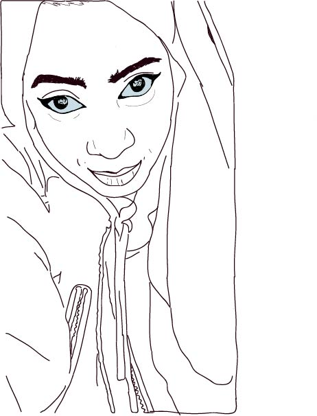
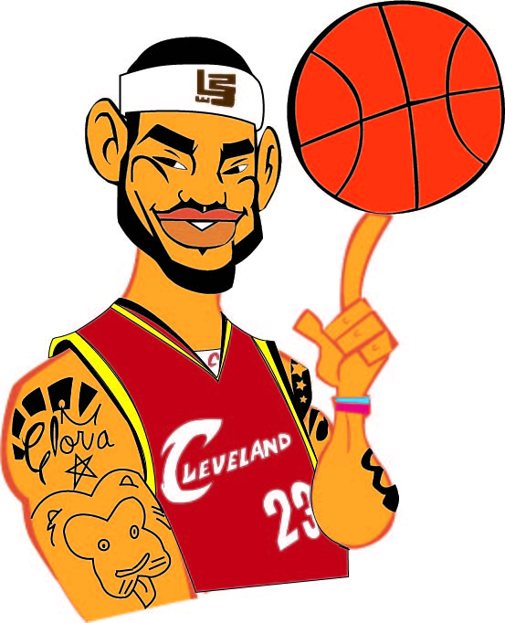
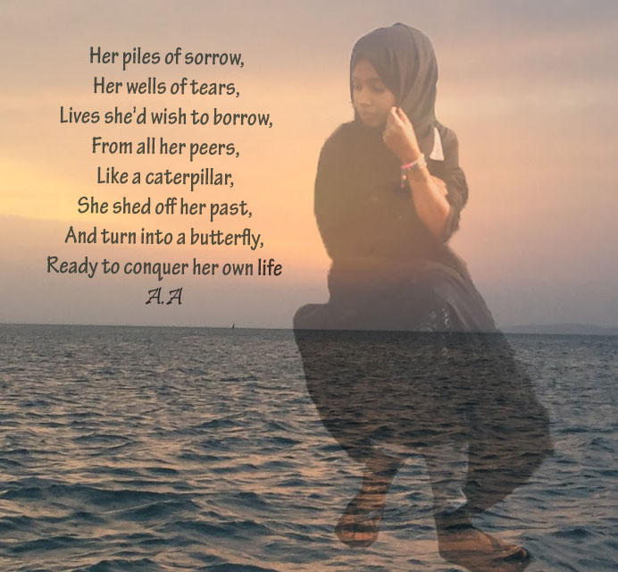
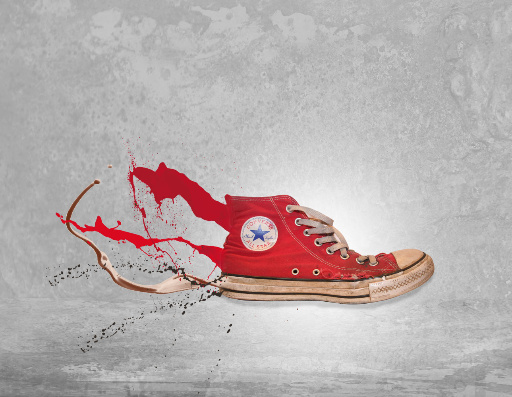
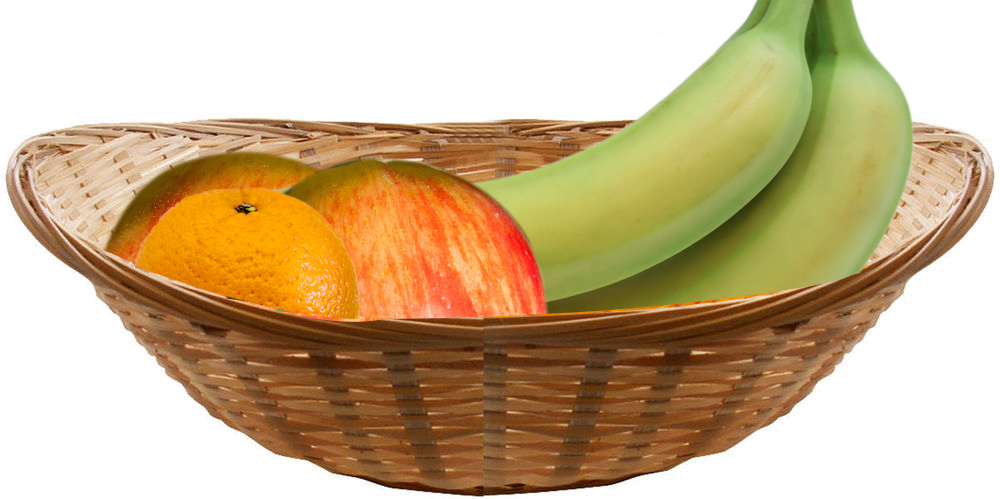
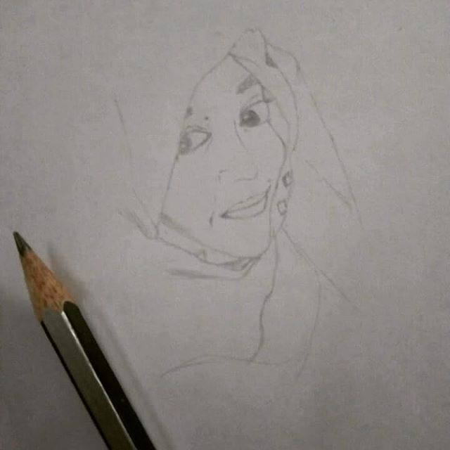

I used painttool brush to trace the girl in Adobe illustrator.
This is my logo derived from my initial alphabet "N" and the color from my personallities: Creativity and cheerfulness.

This is Lebron tutorial using pentool in Adobe Illustrator.

These are two photos edited in photoshop and put together. I used the magnetic Lasso tool to cut the girl's image from it's original background and blend it with the background.

I used pentool to cut the sneaker from another background in Adobe Photoshop, and the Magic Wand tool to cut the splashes from another background. I blended them well with the sneaker.
 This was a tutorial in Adobe Illustrator. I made a contour and trim it to form the space between the thumb and the other fingers.
This was a tutorial in Adobe Illustrator. I made a contour and trim it to form the space between the thumb and the other fingers.

Photoshop: Here, I used several layer mask to layer the fruits which are from another background.

This is one of my friends I drew using a pencil. Drawing is one of the things I like doing during my free time.